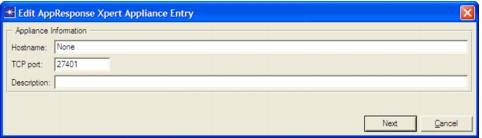
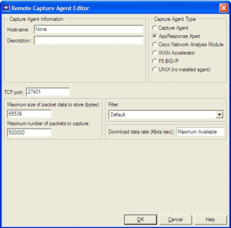

Configuring an AppResponse Xpert Capture AppResponse Xpert captures can be performed from the On-Demand tabbed page and the AppResponse Xpert tabbed page. Use the On-Demand tabbed page to define on-demand captures on specific AppResponse Xpert appliances. Use the AppResponse Xpert tabbed page to define captures on all AppResponse Xpert appliances. The workflow for configuring/performing captures on AppResponse Xpert appliances is similar to the workflow on hosts that have AppTransaction Xpert capture agents. Note—There is no need to install a capture agent on the appliance. AppResponse Xpert console software includes capture functionality that supports both on-demand (on specific appliances) and continuous captures. When defining a capture from the AppResponse Xpert tabbed page (shown in the following figure), you must specify the hostname and the login/password. The type of AppResponse Xpert appliance and its abilities are determined automatically. Figure 4-7 Configuring Continuous Captures on an AppResponse Xpert Appliance (AppResponse Xpert Tabbed Page)  When defining an on-demand capture from the On-Demand tabbed page (shown in the following figure), you must specify the capture settings, as listed in the following table. Figure 4-8 Configuring On-Demand Captures on an AppResponse Xpert Appliance (On-Demand Tabbed Page)  The following table lists the configuration options for captures on an AppResponse Xpert appliance. Table 4-7 Capture Settings for AppResponse Xpert Appliances Item Description Download data rate (Kbits/sec) Specifies the maximum data rate to use when downloading packet traces from the appliance. (For on-demand captures only.) For more information, see Procedure 4-8. Filter Specifies a packet trace filter so the appliance captures only certain packets. (For on-demand captures only.) For more information, see Packet Filters. Hostname Hostname of the AppResponse Xpert appliance. You can specify either the computer name or the IP address. Maximum Number of Packets to Capture The default setting is 100,000. Enter -1 to specify an unlimited number of packets. (For on-demand captures only.) Maximum Size of Packet Data To Store (Bytes) Specifies the maximum number of bytes from each packet to include in a packet trace. You might want to fine-tune this setting to capture packet headers (such as IP and TCP information) only, and to minimize the amount of application data captured. (For on-demand captures only.) TCP Port Specifies the port that the op_capture_server service or daemon uses to communicate with the appliance. The default value for this is 27401.